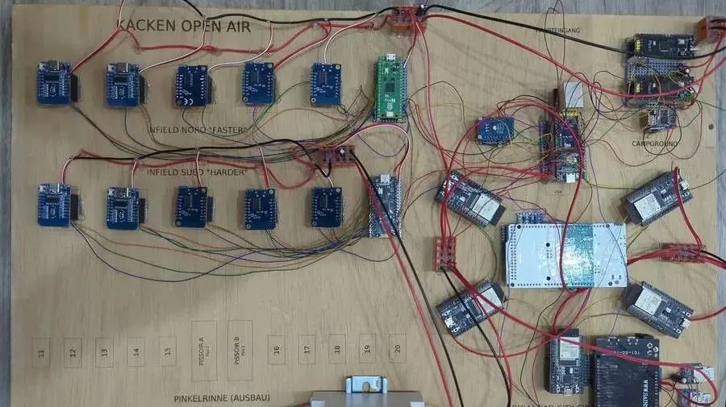

ChatGPT for SNES running on real hardware and a CRT (photos: @benjedwards). Inset: the bot introducing itself.
Lead story · Small model, wild place
Someone put a tiny ChatGPT-style AI on a real Super Nintendo, and you can chat with it in your browser
A 2.2M-parameter language model running on the SNES's Super FX 2 chip. Try it in an emulator.
Tech journalist Benj Edwards had AI agents build an unofficial “ChatGPT for SNES”: a 2.2-million-parameter model that runs on the Doom-era Super FX 2 chip and types its answers one word at a time. It's often wrong, and that's half the fun.
♥ 1,891⟲ 186🔖 565👁 103.4kHN 47 pts
Read the story
What it is. Benj Edwards, a tech journalist and retro-computing fan, asked a fun question: “AI runs on GPUs, so I wondered: how good would ChatGPT be if it ran on the Super NES's best GPU, the Super FX 2 chip?” The answer is ChatGPT for SNES, an unofficial ROM. A small language model with about 2.2 million parameters runs on the cartridge's Super FX 2 coprocessor, the chip that powered games like Doom on the SNES, and writes its replies one word at a time. It isn't made or endorsed by OpenAI.
How it was made. The project page says Edwards designed it and AI agents wrote the code. Its training conversations were generated by OpenAI's open-weight gpt-oss-120b. It knows about 8,000 words. A second build adds a “fact book”, the opening sentences of 150,000 Simple English Wikipedia articles stored in the cartridge's MSU-1 data file, so the model can decide to look something up, a bit like ChatGPT searching the web.
Why people love it. It's a perfect “small model, silly place” hack. His post got 1.9k likes and 565 bookmarks. Edwards is upfront that it's “not a useful assistant”: the model is millions of times smaller than real ChatGPT and often wrong, sometimes confidently. His video demo shows both the surprising answers and the nonsense. If you like it, the page also links Séance, a tiny language model running on a real NES.
A three-minute painted short about an old-school programmer and AI hit 40k likes overnight
A painterly short about a veteran coder arguing with an AI mantis. Programmers can't stop sharing it.
♥ 40.3k⟲ 5,399🔖 29.3k👁 2.9Mposted Nov 19, 02:44
Read the storyFrames from the short: a veteran programmer, painted in thick brushstrokes, argues with a glowing mantis. Watermark credits TikTok's @bennett.reloaded.
The biggest post on dev X since yesterday's edition isn't a tool. It's a three-minute animated short. A grey-haired programmer at a keyboard, painted in thick, shifting brushstrokes, argues with a glowing green mantis about AI writing code. Lines include “Nobody is taking programming from you” and “People respected me.”
@ashen_one posted it with “show this video to anybody that is an old school programmer that hates AI”. It got 40k likes and 29k bookmarks and 2.9M views. @Glinner quoted it (994 ♥): “This also applies to writers, animators and everyone else afraid of what happens next.” Not everyone agreed. One self-described low-level programmer (@IMAO_, 273 ♥) said his wife found it “maudlin”, and he didn't.
Who made it: the TikTok watermark says @bennett.reloaded, and several replies point to the same creator. We couldn't confirm how it was made. Replies disagree, so we're not guessing.
Linger: an open-source personal agent that claims a 125B model on a 12 GB gaming GPU
Open-source local agent; its engine parks busy experts on GPU, the rest in RAM and SSD.
♥ 682⟲ 164🔖 522👁 580kGitHub ~2.1k ★
Read the storyLinger's GitHub card. The repo had about 2.1k stars when we checked.
Linger is a personal AI agent that runs on your own Mac or PC. It remembers your files, mail and calendar and can run multi-step tasks. It was open-sourced by Tony Zhang (@zhangboknight), who introduces himself as an early DeepSeek team member. His launch post got 682 ♥ and 522 bookmarks.
The interesting bit is the engine, PolyStrata. Big “mixture-of-experts” models only use a few experts per word, so it keeps the busiest ones on the GPU, less-used ones in RAM and rare ones on the SSD. The README claims the 125B Qwen3.8-Flash-Next runs at 45.5 tokens/s on a 12 GB RTX 3060 with 64 GB of RAM.
These are the team's own numbers. @kyzoroX pointed out they're all generation speed, and asked someone to time prompt processing at 64K context. Memory and personal data stay on the device; the README notes connectors and voice still go online.
Reverb-TTS clones a voice from a few seconds of audio, on a laptop or even a phone
A 297M voice-cloning model in 7 languages that runs locally, even in WebGPU.
♥ 436⟲ 48🔖 542👁 26.3kCC-BY-NC-4.0
Read the storyReverb-TTS header from the model card: 297M parameters, seven languages.
Software Mansion, the Polish studio behind many popular React Native libraries, released its first model. Reverb-TTS takes 3–20 seconds of someone speaking and reads any text in that voice, in English, German, French, Spanish, Italian, Polish or Portuguese. It's 297M parameters, slimmed down from the open OmniVoice model.
Why builders bookmarked it (542 🔖 on 436 ♥): it's made for on-device use. It comes in int8/int4 and ExecuTorch builds for Apple, Android and Qualcomm chips. @_jakubchmura says it runs at 17× real time on an M4 Pro, in the browser via WebGPU. The card claims the lowest word-error rate on the Open TTS Leaderboard's MiniMax set.
Catch: the license is CC-BY-NC-4.0, so non-commercial use only. And clone only voices you have permission to use.
It can make mistakes, but it's fun.@benjedwards, on ChatGPT for SNES · 1,891 ♥ · post
If you built something with AI and you've never checked, do these two things today.Reddit post shared by @fromcodetocloud · 13k ♥ · post
To get an agent to use your design system properly, you need to enforce rules.@emilkowalski · 1,881 ♥ · post
Local-model hack
Unsloth can now run local models on the NPU in AMD Ryzen AI laptops
That idle AI chip in Ryzen AI laptops now runs local LLMs in Unsloth, using less power.
♥ 976⟲ 91🔖 248👁 37k@danielhanchen ♥ 134
Read the storyUnsloth's AMD NPU guide, as posted by @UnslothAI.
Many recent AMD laptops ship with an NPU, a low-power AI chip that mostly sits idle. Unsloth, the popular open-source tool for fine-tuning and running models, now runs chat models on it. They worked with AMD and use AMD's FastFlowLM runtime. Unsloth claims NPUs use 2–4× less energy per token than GPUs.
Supported: Ryzen AI 300 (Strix Point, Krackan Point), Ryzen AI Max (Strix Halo) and Ryzen AI 400 (Gorgon Point), on Windows 11 or Linux (kernel 7.0+ with the amdxdna driver). The NPU runs special 4-bit “Q4NX” models. One example in the guide is Qwen3.6-35B-A3B at 17.2 tok/s on a 64 GB machine.
How: install Unsloth Desktop or the Web UI, open the model picker, switch the filter to NPU and click Enable NPU. It also tells you what's missing (driver, firmware, memlock limit).
fanzines.app turns one sheet of A4 into an 8-page zine, laid out in your browser
Fold one A4 sheet into an 8-page booklet; this web app handles the upside-down page order.
HN 282 pts61 comments
Read the storyThe fanzines.app editor: lay out each page the right way up, and it handles the folding.
A classic paper hack: fold an A4 sheet in half three times, cut the centre crease and refold it. You get an 8-page booklet with no staples or glue. The annoying part is the layout, because the pages land in a strange order and the top row has to be printed upside down.
Wil built fanzines.app to handle that. You place photos and text on each page the normal way, and the export puts all 8 panels on the sheet, flips the top row, and writes a 300 DPI PDF. Everything stays in your browser and nothing is uploaded. This week's update adds real spreads, a review step with cut/fold lines and a safe margin, and phone editing.
It reached the Hacker News front page with 282 points. People were trading zine tips in the comments.
What to check, explained plainly and without exploit details.
Security · check your versions
OpenSSL's “9.8 critical” base64 bug is real, but much narrower than the score suggests
A 9.8-rated OpenSSL overflow, but only on 4.x and only with 1.5 GB+ inputs.
♥ 581⟲ 125🔖 286👁 78.2kHN 129 pts
Read the storyImage from @sysxplore's breakdown of the OpenSSL bug.
OpenSSL is the crypto library behind most HTTPS on Linux. CVE-2026-121481 is a heap overflow in EVP_EncodeBlock(), its base64 encoder: with a huge input, it can write past the end of the output buffer. @cvedotnow's alert (581 ♥) spread it with the scary “CRITICAL 9.8” label, and it reached the Hacker News front page (129 pts).
@sysxplore's breakdown adds context. Only OpenSSL 4.0.0–4.0.3 and 4.1.0 are affected, and only when an app passes an input near INT_MAX, over 1.5 GB in one call. The 9.8 score comes from CISA, not OpenSSL. When he posted, OpenSSL had no advisory and the fix PR was still under discussion. @cvedotnow lists 4.1.1 and 4.0.4 as the fixed versions.
What to do: check which OpenSSL you run. 3.x isn't on the affected list. If you're on 4.x, update once your distro ships the fix.
Ruby2Shell: the write-up behind yesterday's Ruby fixes says stock Rails was reachable without logging in
A one-byte bug in Ruby's upcase let strangers run code on default Rails. Update Ruby.
HN 394 pts169 comments
Read the storyThe Ruby2Shell disclosure card (Veria Labs).
Yesterday we covered the Ruby 4.0.10 / 3.4.13 / 3.3.14 releases. Now Veria Labs has published the story behind the worst bug: a one-byte heap overflow in Ruby's string case conversion (think upcase) that leads to remote code execution. Their page says it's reachable without logging in, in the default setup of Rails and classic-style Sinatra. It hit 394 points on Hacker News.
Their table of affected software is the useful part. Ruby 3.2 and older (back to 2.4.0) are end-of-life and won't get a fix. GitLab, Mastodon, OpenProject and the Discourse base image have patches. When we read it, GitHub Enterprise Server (3.22.5 and earlier) and Chatwoot (4.20.0 and earlier) were still listed as vulnerable.
What to do:ruby -v, then upgrade to 3.3.14, 3.4.13 or 4.0.10 and redeploy. If you self-host something that bundles its own Ruby, watch for the vendor's update. We're not repeating exploit details.
A vibe-coded booking app was shipping its Stripe and OpenAI secret keys to every visitor
Search your build folder for 'sk-' and put hard spending caps on your API keys. Today.
♥ 13k⟲ 680🔖 15k👁 2.6Mposted Nov 18
Read the storyThe Reddit post (r/TechLeader) that @fromcodetocloud screenshotted.
A non-developer built a booking app with Cursor and Claude (Supabase, Stripe, OpenAI, Resend) and asked a backend friend to look at it before launch. In ten minutes with browser devtools, the friend found the OpenAI key, the live Stripe secret key and the Resend key in plain text in the JavaScript every visitor downloads. Anything prefixed VITE_ gets bundled into the frontend on purpose, and the AI had named them that way so the chat would work from the browser.
The server logs also showed 212 requests for /.env in two weeks, from bots, before anyone even knew the app existed. The fix took one evening: rotate all three keys, add a $20 hard cap on OpenAI, and move the Stripe and OpenAI calls into server-side functions so the browser never sees a key.
@fromcodetocloud's screenshots got 13k likes and 15k bookmarks. The post's advice: run your build, search the output folder for sk- and key, and make sure every API key has a hard cap.
How to make a coding agent actually use your design system: enforce it, don't ask
Lint rules, typed props, CI checks and semantic tokens keep agents on your components.
♥ 1,881⟲ 61🔖 2,162👁 55.2k
Read the storyEmil Kowalski's four rules, as posted.
Design engineer Emil Kowalski (known for UI libraries like Sonner) posted a short list that got more bookmarks than likes (2,162 🔖 vs 1,881 ♥). His point: agents won't reliably follow your components and tokens just because the docs exist. Use lint rules and strict, type-safe props. Add CI checks that fail when a component is misused. Document when and how to use each one. And use semantic tokens, named for their role (like “danger”), not their value.
The same day, @shadcn posted part 2 of building a UI SDK where components tell agents which actions they can take (337 ♥).
“Do not buy RAM, compress”: zram fit 5.7 GB of memory into 1.7 GB
Linux can compress RAM on the fly. Ubuntu doesn't enable it by default; you can.
HN 278 pts229 comments
Read the storyThe post's own result, quoted.
With RAM prices up, this Hacker News hit (278 pts, 229 comments) argues for zram: a compressed swap area that lives in RAM. Windows, macOS and Android already compress memory, and Fedora and Pop!_OS turn zram on by default. Ubuntu and most other distros don't. The author opened about a hundred browser tabs on a 32 GB machine and got 5.7 GB of data into 1.7 GB of RAM, a 1:3.35 ratio, for a little extra CPU work.
Try it:zramctl shows whether you already have it. On Debian/Ubuntu the systemd-zram-generator package sets it up. The post points to the Arch wiki's zram page for the details.
Builds makers were sharing since yesterday's edition, each with what you'd need to try it.

Hardware meets game design
A browser game where knocking on a festival toilet door crashes a real microcontroller
Each in-game toilet is a real ESP8266. Knock enough and it crashes, and the toilet collapses.
Hackaday, Nov 20
Read the storyPart of the real microcontroller cluster behind Kacken Open Air (Hackaday).
Kacken Open Air is a silly German browser game: too many festival-goers, too few toilets. The mechanic is the clever part. Every toilet in the game is backed by a real ESP8266. Each knock adds computing load to that chip, and if it slows down enough, whoever is inside gets kicked out. Keep knocking and it runs out of memory, crashes and reboots, and in the game the toilet collapses.
The cluster also uses an ESP32-P4, Raspberry Pi Pico 2s, Arduino Dues, and an STM8 as a hardware watchdog that keeps everything alive. It's a fun template for “game state = real hardware state”.
A glowing cube with 24,576 LEDs that plays games and reacts to music
Six 64×64 LED panels, a Pi CM4 and a battery: an audio-reactive cube for your desk.
Hackaday, Nov 19
Read the storyRoss Harvey's cube showing a clock (Hackaday).
Ross Harvey covered all six faces of a cube with 64×64 HUB75 LED panels (2.5 mm pitch, 160 mm square) behind acrylic diffusers. Inside: a Raspberry Pi Compute Module 4, a custom HUB75 driver board, a 2-cell Li-ion pack, two speakers and a mic.
It plays games, music visualisers and a world clock. The build is documented on Hackaday.io if you want to make one, and he now sells a ready-made version.
A $10 round-screen badge got reverse-engineered into an open SDK
A $10 badge with a round touchscreen and BLE now runs custom firmware.
Hackaday, Nov 19
Read the storySlide from Andres Sabas's talk: one byte changed in the firmware, custom build running.
The JieLi AC707N badge costs about $10 and has a 360×360 round touchscreen, two buttons, 4 MB of flash and Bluetooth LE. Andres Sabas (Electronic Cats) took one apart, decompiled its companion Android app in Ghidra, and found the firmware could be downloaded without authentication. From there he built an open SDK and custom firmware that can make the badge a Bluetooth mouse or a BLE scanner.
A Hackaday commenter noted the flip side: unpaired badges can apparently be overwritten over the air.
A garage-door bridge kept rebooting without the cloud, so he gave it a fake cloud
Dump the key over SWD, run your own MQTT broker, and the MyQ bridge stops rebooting.
Hackaday, Nov 20HN 821 (related)
Read the storyThe MyQ bridge wired to an Arduino for the key dump (Hackaday).
Kusha's LiftMaster MyQ Home Bridge rebooted constantly once he put it on an offline IoT network. His fix: read the MQTT encryption key off its Cortex-M4 through the exposed SWD debug pins with a small Arduino sketch, run his own MQTT broker with that key (Docker config included), and point the maker's domains at it with local DNS. The bridge thinks it's online and stops rebooting.
Same theme on HN this week: “Garage Door Spam” (821 pts) is about a myQ app full of ads, and the fix there was a ~$62 open-firmware ratgdo32 board running locally.